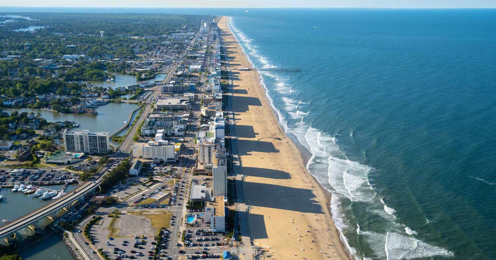
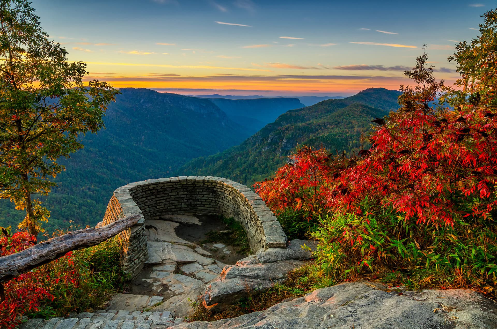
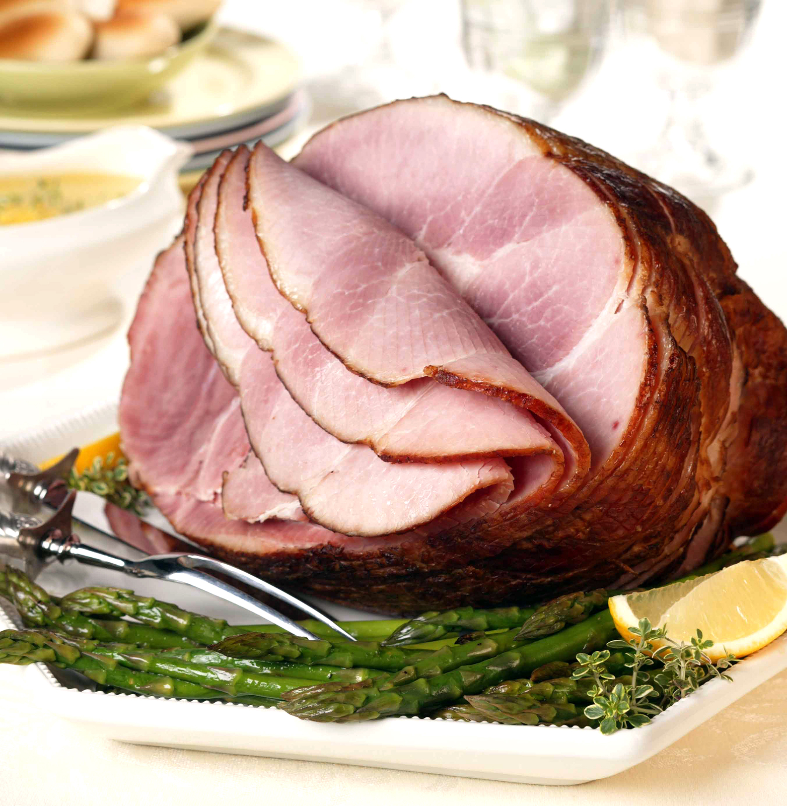
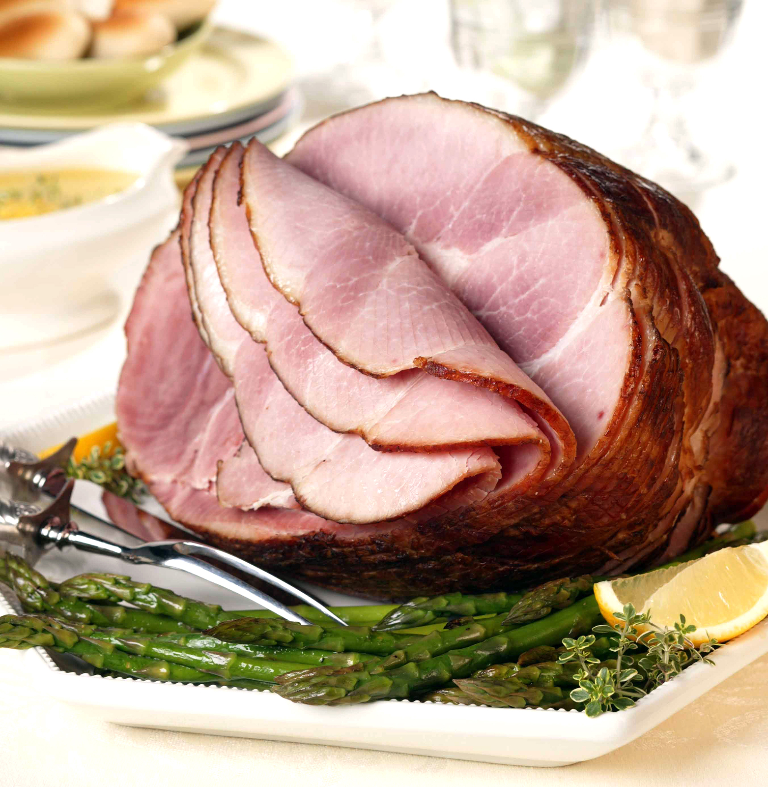
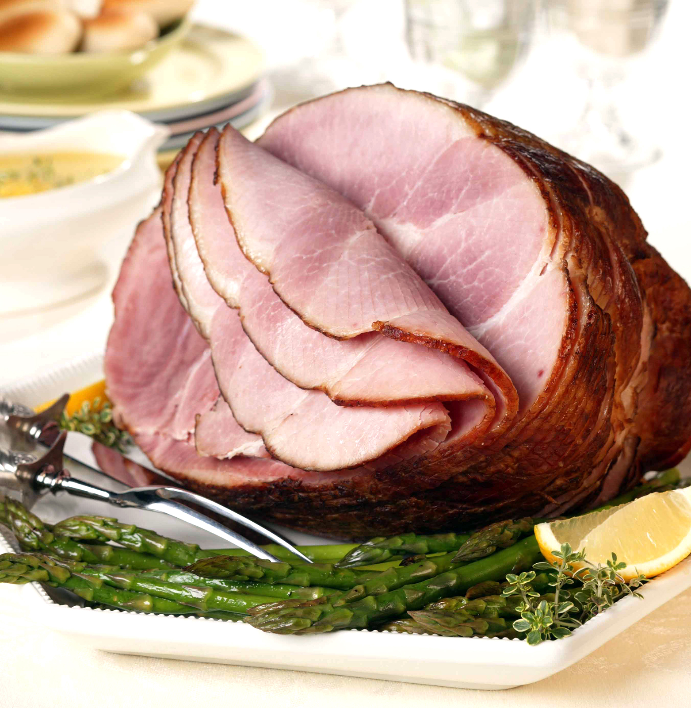

Photo Tour of Virginia
Explore Virginia through these photos.


 


About This Project
This project is a photo tour of Virginia, showcasing its beautiful landscapes, vibrant cities, and unique culinary offerings. Each section highlights a different aspect of Virginia's charm.